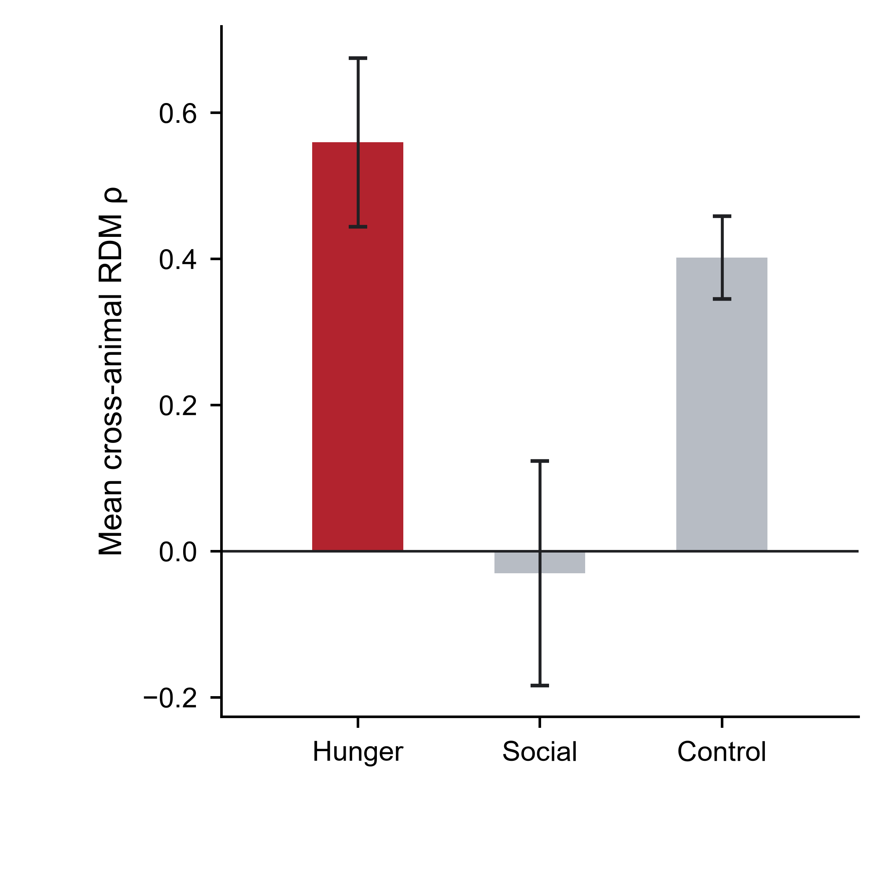
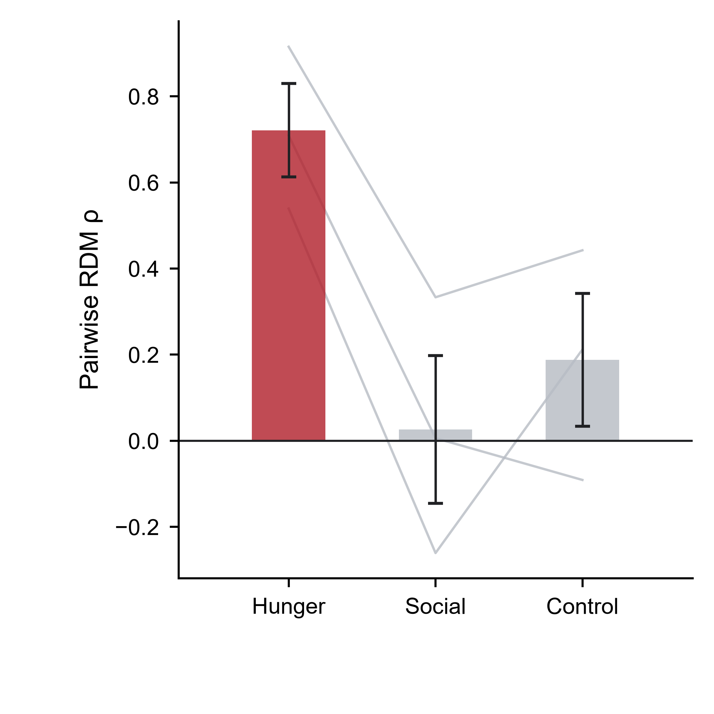
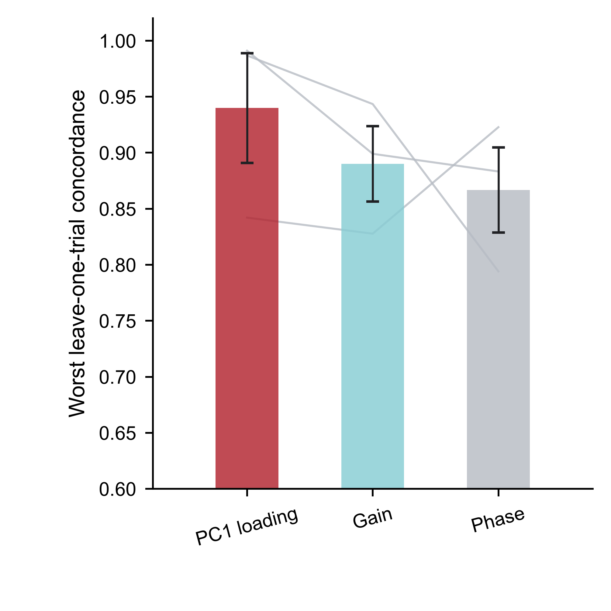
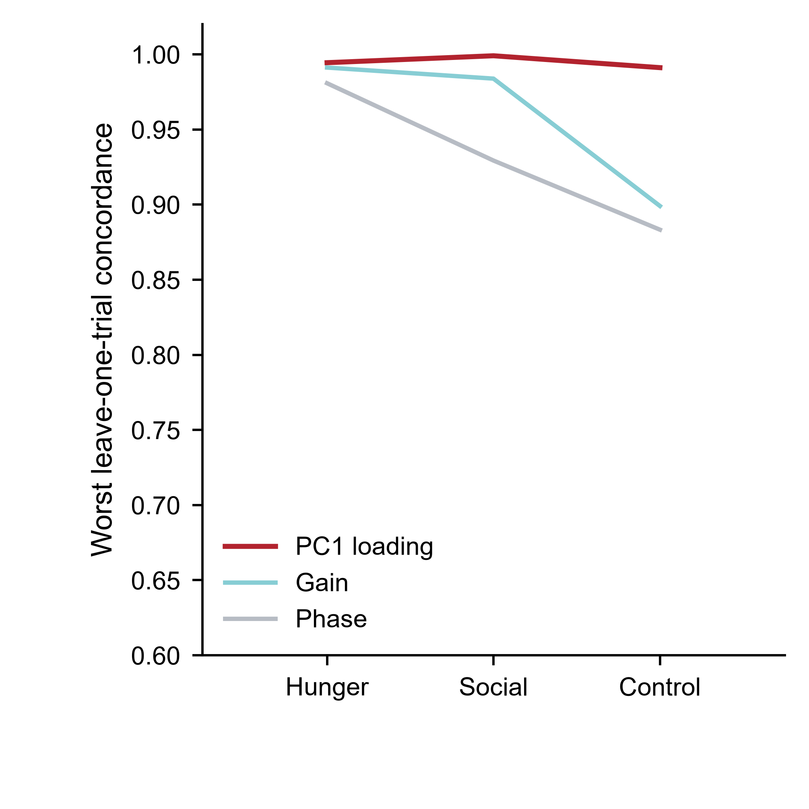

Named 2021 · 3 mice
Same-cell geometry is robust within animals; shared cross-animal geometry is hunger-specific.
ANM492241, ANM496190 and ANM496191 retain the same selected cells across hunger, social and control. V51 separates context specificity, pairwise animal evidence and leave-one-trial robustness into individual square panels.

Context geometry · historical normalization
Hunger is the strongest shared cross-animal context: mean RDM ρ=0.721, exact p=0.0020. PDF · SVG


Context geometry · raw baseline-z
The context hierarchy survives a different representation: hunger ρ=0.560, p=0.0063. PDF · SVG


Animal-pair geometry
Gray lines show the three mouse pairs; bars show mean±SEM without overlaid pairwise points. PDF · SVG


Cohort leave-one-trial
Worst PC1/Gain/Phase concordance remains high across the three animals. PDF · SVG


ANM492241 leave-one-trial
Hunger, social and control remain stable under single-trial deletion. PDF · SVG